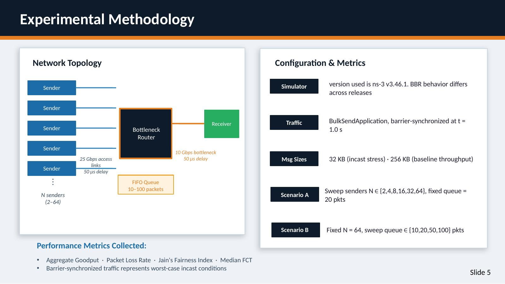
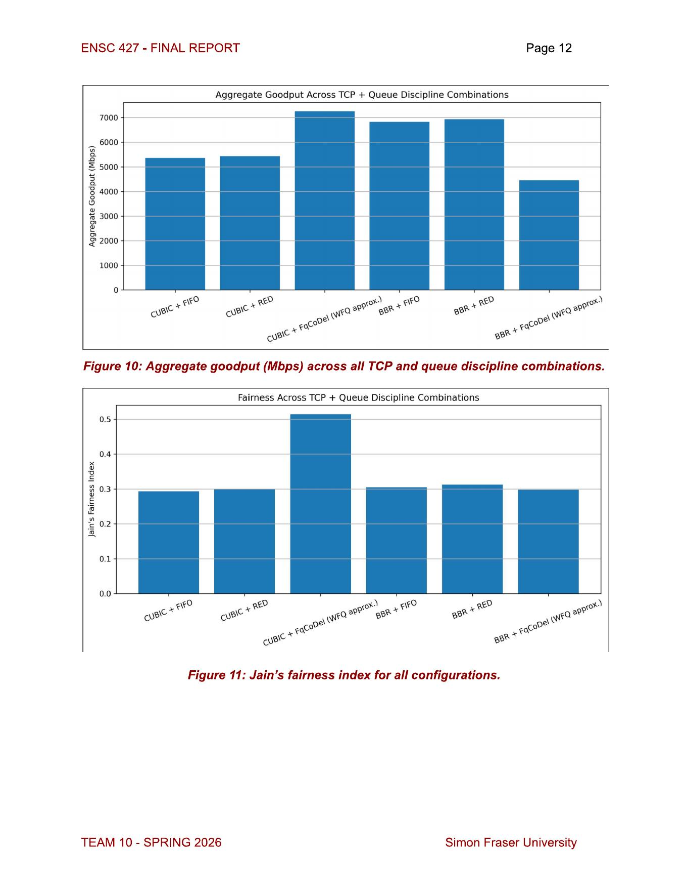
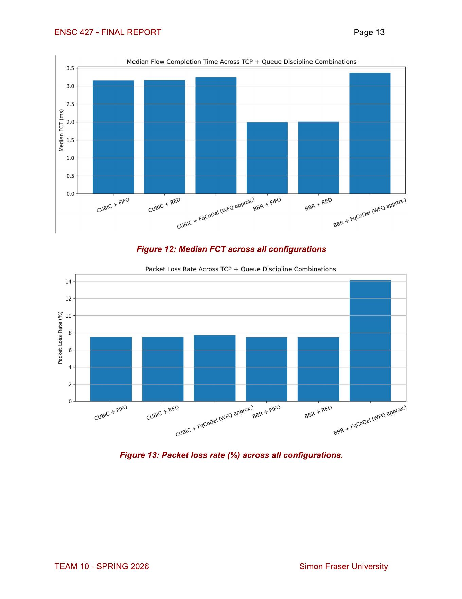

Reproduce incast
Barrier-synchronized BulkSend applications created the many-to-one burst at the bottleneck.
Compared TCP CUBIC and TCP BBR under synchronized data-center incast, then tested how FIFO, RED and FqCoDel changed throughput, latency, packet loss and fairness.

Incast occurs when many servers transmit to one receiver at nearly the same time. A shallow switch buffer can overflow within microseconds, triggering packet loss and retransmission timeouts even when the network still has available capacity.
The study first swept sender count and queue depth under FIFO. The final phase fixed the stress case at 64 senders and a 50-packet queue, then compared every combination of two TCP variants and three queue disciplines.
The simulation captured both aggregate performance and per-flow behavior so that a throughput gain could not hide poor latency, loss or fairness.
Barrier-synchronized BulkSend applications created the many-to-one burst at the bottleneck.
Sender counts from 2 to 64 and queue depths from 10 to 100 packets exposed the transition into timeout-dominated collapse.
CUBIC and BBR were paired with FIFO, RED and FqCoDel under the same 64-sender stress condition.
Aggregate goodput, median flow-completion time, packet loss and Jain's fairness index were analyzed together.
One configuration maximized throughput and fairness. A different pair minimized latency. The wrong pairing substantially degraded BBR.
| Configuration | Goodput | Median FCT | Loss | Fairness | Interpretation |
|---|---|---|---|---|---|
| CUBIC + FIFO | 5,358.7 Mbps | 3.16 ms | 7.52% | 0.29 | Baseline |
| CUBIC + RED | 5,431.4 Mbps | 3.16 ms | 7.51% | 0.30 | Marginal gain |
| CUBIC + FqCoDel | 7,258.7 Mbps | 3.25 ms | 7.74% | 0.51 | Best throughput and fairness |
| BBR + FIFO | 6,826.5 Mbps | 2.01 ms | 7.49% | 0.31 | Lowest latency |
| BBR + RED | 6,933.5 Mbps | 2.01 ms | 7.48% | 0.31 | Lowest latency |
| BBR + FqCoDel | 4,455.4 Mbps | 3.37 ms | 14.13% | 0.30 | Worst overall |


The result shifted the design question from “Which TCP algorithm wins?” to “Which combination best matches the workload?” Bulk-transfer systems may prioritize CUBIC with fair queueing, while latency-sensitive systems benefit from BBR with simpler FIFO or RED queues.
A queueing mechanism that improved CUBIC degraded BBR under the same traffic.
Latency, loss and fairness revealed trade-offs hidden by aggregate goodput alone.
Perfect synchronization represents a worst case, and FqCoDel approximated rather than exactly implemented weighted fair queueing.
Two-person project with equal contribution to experiment design, simulation, coding, analysis and report writing. The portfolio presents selected results without publishing student numbers or personal contact information.